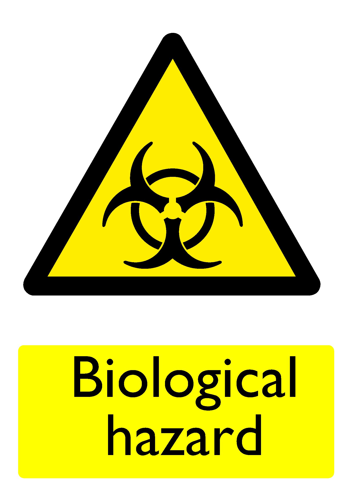

| Hazard ID | 11103 |
|---|---|
| Hazard Sign |  |
| Consequences | |
| Standard Precautions |
|
| Additional Control Measures Identified | |
| Risk Assessments | |
| Severity | High |
| Liklihood | Low |
| Risk Rating | High |
| Related Hazards |
|
| Notes | Ensure all specified control measures are present and effective. |